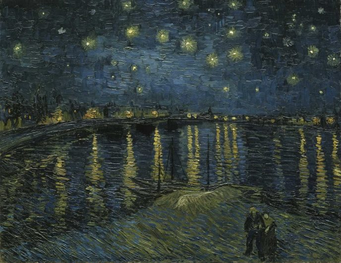
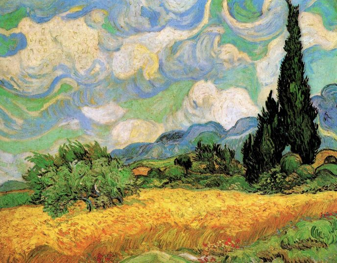
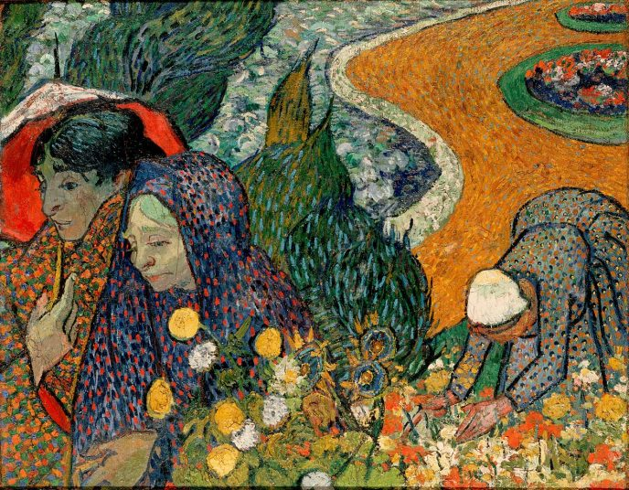
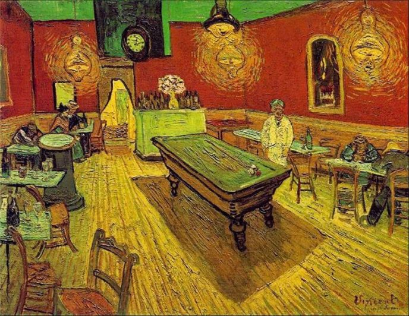
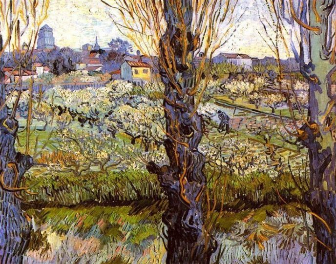

Vincent Willem van Gogh





‹
›
-- НАЗВАНИЯ КАРТИН --
Starry Night Over the Rhône
Wheat Field with Cypresses
Memory of the Garden at Etten
The Night Café
Flowering Orchards
Какая картина Вам понравилась больше всего?
Starry Night Over the Rhône
Wheat Field with Cypresses
Memory of the Garden at Etten
The Night Café
Flowering Orchards
Sunflowers